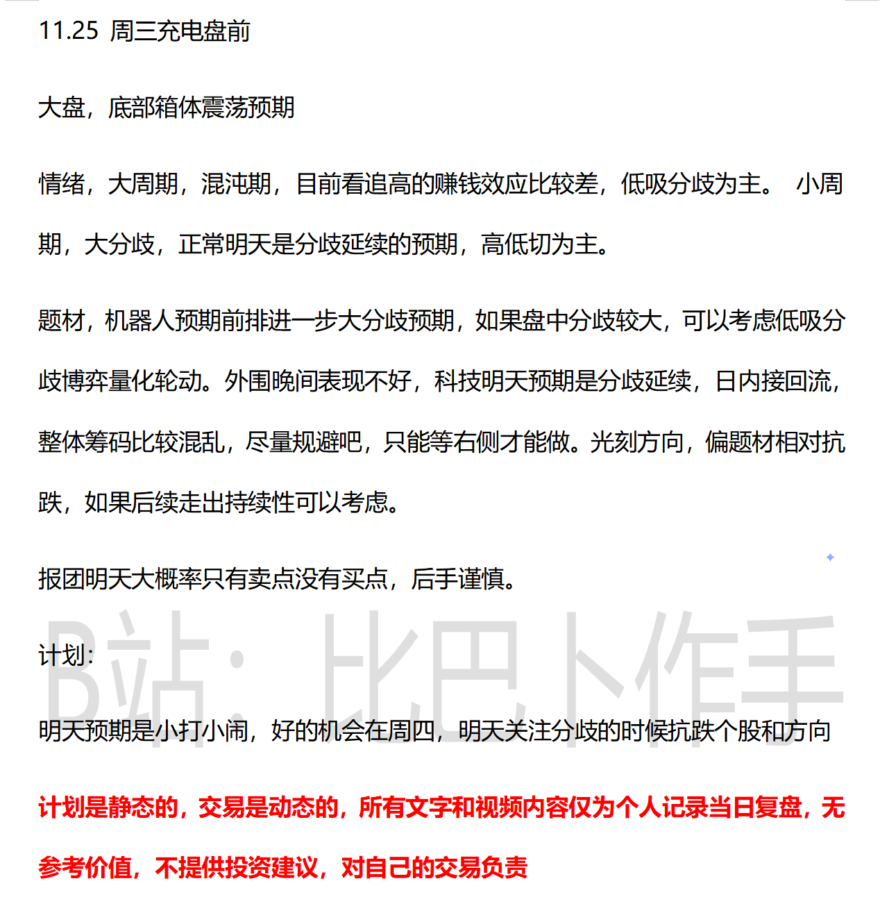
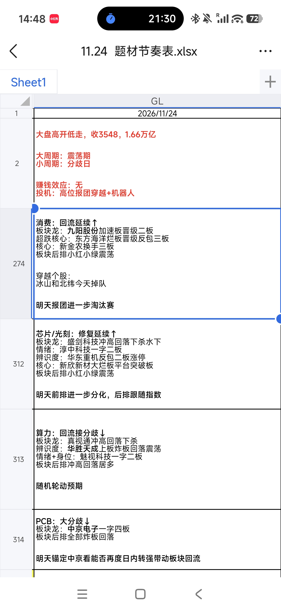
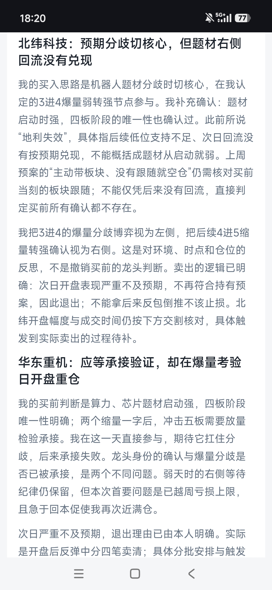
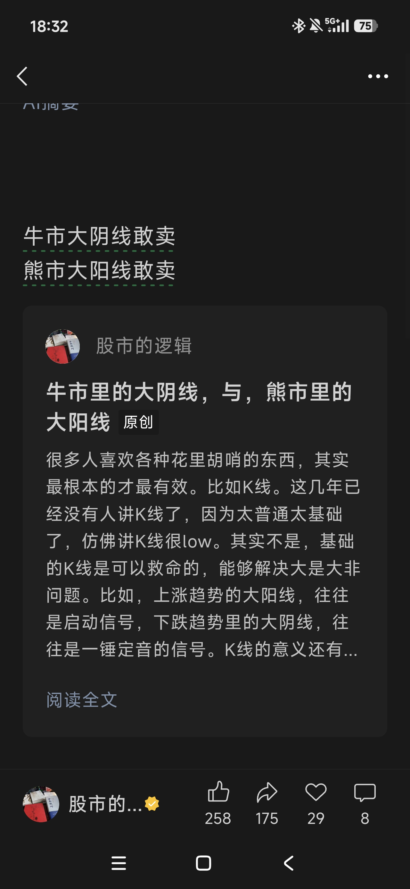
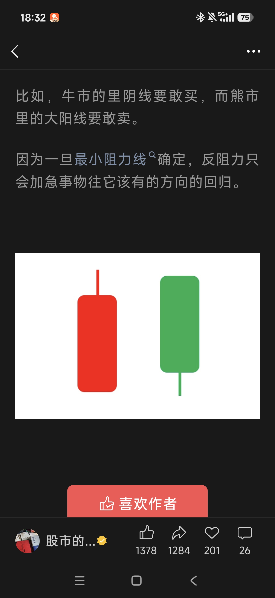
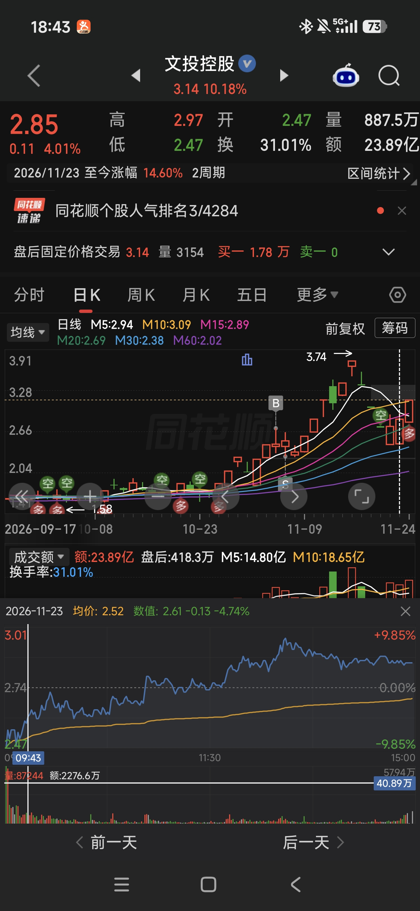

11.23–11.27 本周记录
周中草稿 · 尚未做周度结论当前为过程材料记录。账户收益、成交、仓位、逐日执行与完整周反思均未补齐；周末收齐后再做正式交割复盘。
阶段性思路
本人阶段性复盘：这波思路与比神的观察方向接近，重点跟踪高位抱团与机器人题材的赚钱效应。上周北纬科技、华东重机的买入判断并非只看个股对错，核心问题是节奏与天时不匹配；后来两者走出龙二波趋势，不反向证明当时买点或环境判断正确。
当前提炼的环境原则：熊市环境不抄底、不抢反弹；强势行情中不因正常回调与分歧先行畏惧，分歧可能提供观察核心的机会，但仍要核对大盘、题材回流、个股主动性和模式买点。此为本周学习结论草稿，周末结合实际盘面再检验。
11/24 盘面与题材节奏记录
当日盘前框架（来源截图）
- 大盘：底部箱体震荡预期。
- 情绪：大周期混沌、小周期大分歧；截图判断追高赚钱效应较差，低吸分歧为主。
- 机器人：预期前排进一步分歧；盘中若分歧较大，观察低吸与量化轮动。科技预期分歧延续、日内接回流；整体筹码较乱，原计划偏右侧观察。
- 光刻方向：截图记为偏题材相对抗跌，后续是否持续仍需验证。
- 报团：截图写“明天大概率只有卖点没有买点，后手谨慎”。这是当时计划，不视为盘后已验证结论。
题材轮动观察（来源截图）
- 消费：回流延续；九阳股份加速晋级二板，东方海洋反包晋级三板、新金农换手三板。
- 芯片/光刻：修复延续；盛剑科技冲高回落、华东重机反包二板涨停、新欣新材平台突破板。
- 算力：回流接分歧向下；真视通冲高回落，华胜天成上板炸板回落，魅视科技一字二板。
- PCB：大分歧；中京电子一字四板，后排普遍炸板回落。
- 截图次日观察点：消费报团进一步淘汰；芯片/光刻看后排分化；算力看中京电子能否日内转强带动回流。均为计划和观察，不写成已发生事实。
文投控股：本人的补充观察
本人补充判断：文投控股这一波当时已经进入观察范围，按自己的模式认为可以参与；虽然主动性弱于浙文影业，但人气排名进入前三，因此不应只盯单一主动龙头而漏看同题材的可交易核心。自我归因是盘面覆盖与综合辨识功底不足，未能及时把它纳入候选。
证据边界：配图显示文投控股2026/11/23涨幅、人气排名及日K/分时画面；这里记录的是用户对当时可参与性的复盘判断，不据此补造实际买点、仓位或成交。
本周材料图






周末收尾待补
- 本周完整成交单、账户每日收益与周初/周末权益。
- 逐笔买卖点、每只成交个股5分K图、实际仓位及是否触及周亏5%停开仓线。
- 本周每日大盘与情绪判断，机器人/高位抱团的实际赚钱效应、回流与梯队反馈。
- 文投控股是否实际交易；若未交易，确认是漏看、主动放弃还是无合规买点。
- 周末再判断“天时不对时个股龙头也顶不住”及牛熊分歧观点在本周案例中的适用边界。
当前不计算全周盈亏、不判定本周执行对错，不把后续走势当成买入时已知依据。